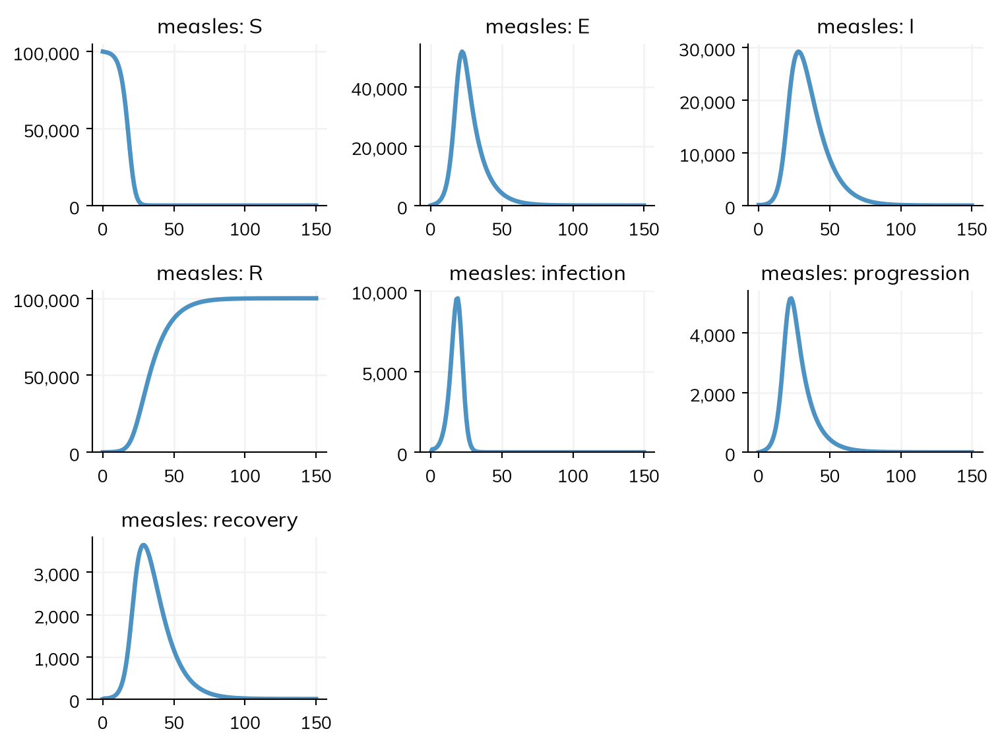
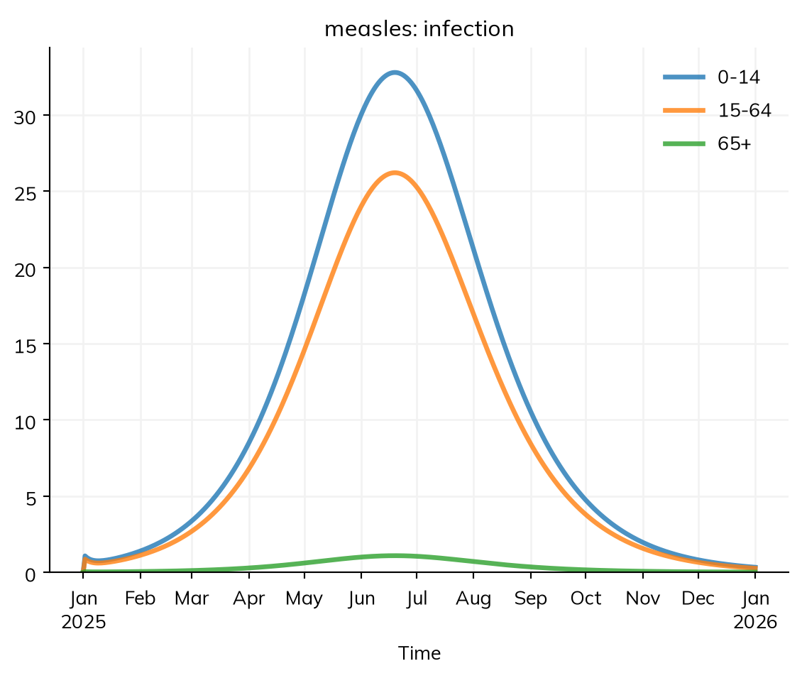
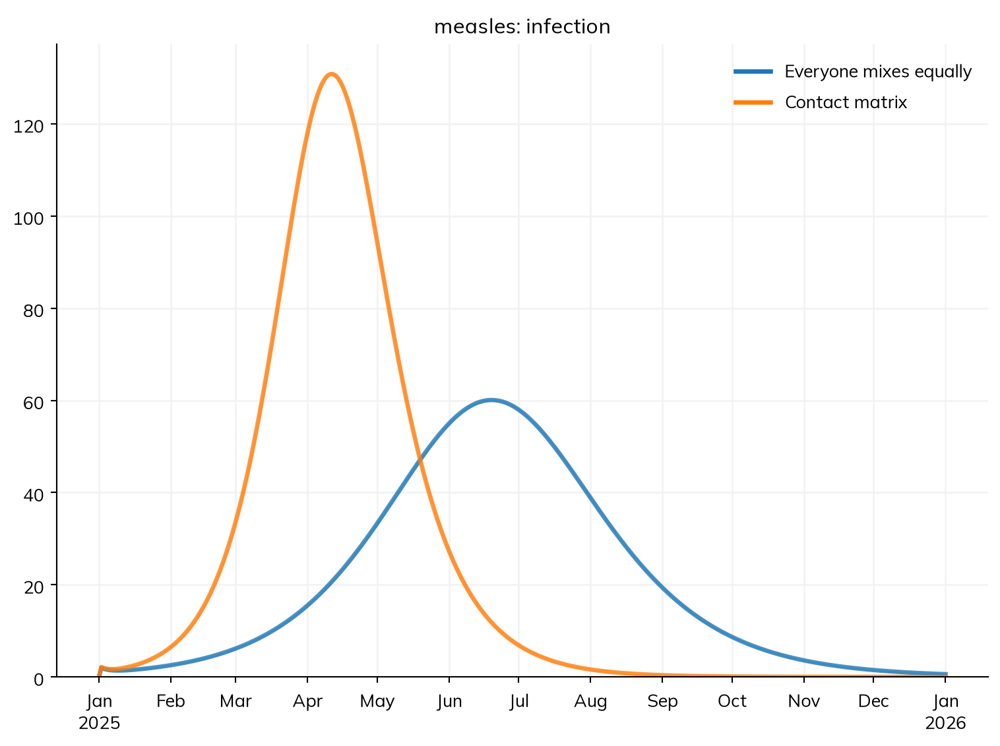
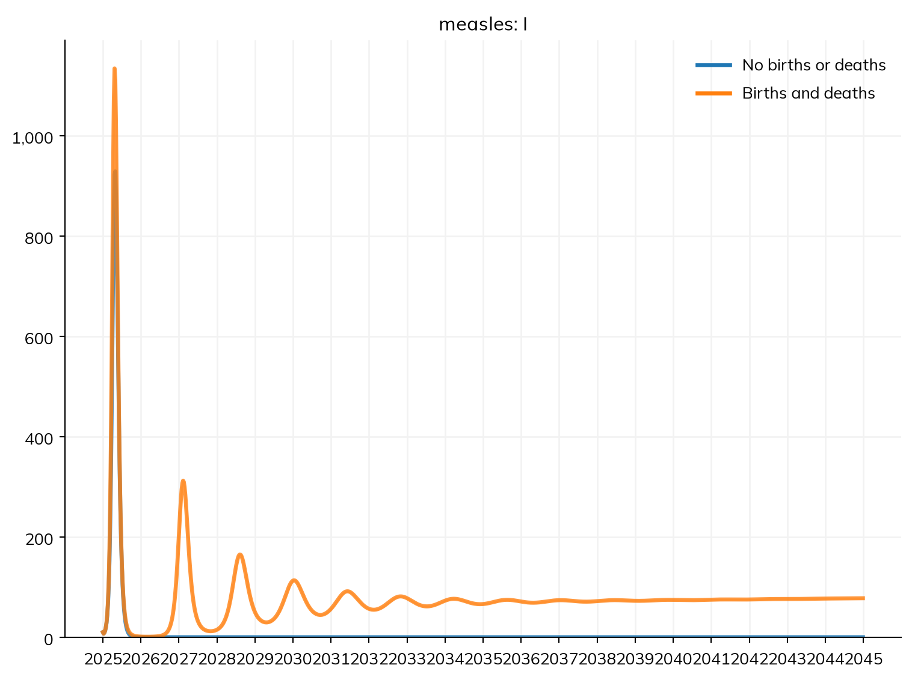
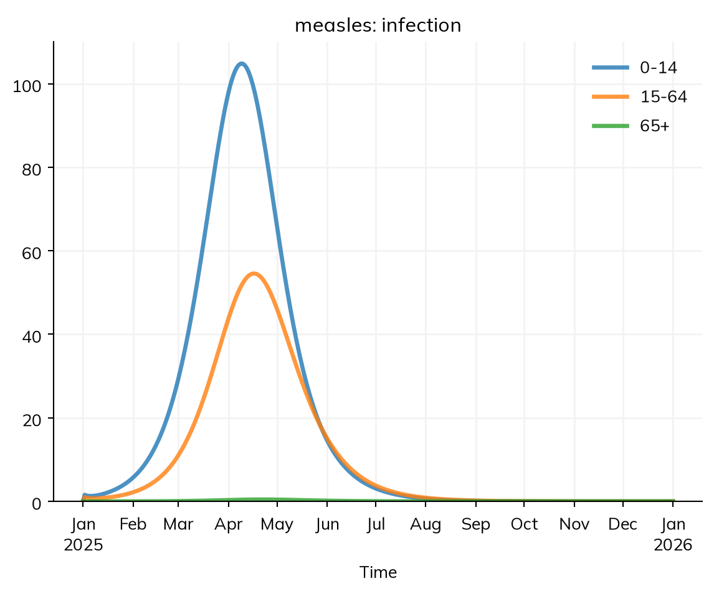

Who gets measles, and why? So far, everyone in the model town mixes with everyone else equally. In reality, children have many more contacts than adults, mostly with other children, at school and at home; and in a town where most people have been vaccinated, the children who missed out are the ones still susceptible. This tutorial splits the measles model into age groups, gives each group its own immunity, describes how the groups mix with a contact matrix, and reads the results by age. It then adds births and deaths, and uses the population and contacts of a real country.
By the end of this tutorial, you will be able to:
split a model into age groups, and give a value for each group;
give the contacts between groups as a contact matrix, and say what β means then;
read results for one age group, or for each, and tell counts from risk;
add births and deaths, and see why they make measles come back;
use the age structure and contact matrix of a country.
The model so far
This is the SEIR model from T3 – Building a disease, with a latent period of 10 days and an infectious period of 8, in a town of 100,000 people. R0 is β times the infectious period, 1.9 × 8 ≈ 15:
import starsim as ssS, E, I, R = ss.states('S E I R')infection = S >> E @1.9*I # β = 1.9 per dayprogression = E >> I @ ss.days(10) # Latent for 10 days on averagerecovery = I >> R @ ss.days(8) # Infectious for 8 days on averagemeasles = ss.Disease(infection, progression, recovery, init=dict(I=0.001))sim = ss.Sim(measles, total_pop=100_000, stop=ss.days(150))sim.run()sim.plot()
Sim: measles, 100,000 people, as an ODE, days 0 to 150
measles: R0 = 15.2, with 100 infectious at the start
Done in 0.0062 s; measles: 99,900 infections; at most 29,215 infectious, on day 28

Age groups, each with its own immunity
stratify() splits each state of a disease into groups: here, by age, into three groups, 0–14, 15–64, and 65 and over. Each group is given by its lower edge, with the share of the population in it, here 30%, 60%, and 10%. The model then has a compartment for each state in each age group: S for children, S for adults, and so on.
On its own, this changes nothing about the epidemic: everyone still mixes with everyone else equally, so each group is infected at the same rate, in proportion to its size. Age groups matter when something differs between them. The first thing that differs in a real town is immunity. Suppose the town has had a vaccination program for years, so that 92% of adults under 65 and 98% of older adults are immune (from vaccination or from past infection), but only 80% of children, since coverage has slipped recently. ss.by() gives a value for each level of a stratification, and init gives the share of each group that starts in a state; init_n starts 10 people infectious, as if measles had just been brought into the town by travelers. The run is for a year, from 1 January 2025:
S, E, I, R = ss.states('S E I R')infection = S >> E @1.9*Iprogression = E >> I @ ss.days(10)recovery = I >> R @ ss.days(8)measles = ss.Disease(infection, progression, recovery, init =dict(R=ss.by(age=[0.8, 0.92, 0.98])), # The share immune in each age group init_n =dict(I=10), # 10 people infectious at the start)measles.stratify(age={0: 0.3, 15: 0.6, 65: 0.1}) # Ages 0-14, 15-64, and 65+, with the share of people in eachsettings =dict(total_pop=100_000, start='2025-01-01', stop='2026-01-01')equal = ss.Sim(measles, label='Everyone mixes equally', **settings)equal.run()equal.results.measles.infection.by('age').plot()
Sim "Everyone mixes equally": measles, 100,000 people, as an ODE, 2025-01-01 to 2026-01-01
measles: R0 = 15.2 (R = 1.67 at the start, with 11% susceptible), with 10 infectious at the start
Note: people do not age between the age groups, since nobody is born or dies; pass use_aging=True to age them
Done in 0.0035 s; measles: 7,438 infections; at most 462 infectious, on 2025-07-06

About 90% of the town is immune, so each case at the start infects about 1.7 others on average (the run prints this as R at the start, after R0): an outbreak, but a modest one, which peaks in early July. Since everyone still mixes equally, the outbreak is spread over the age groups in proportion to the number of susceptible people in each.
Contacts between age groups
A contact matrix gives the number of contacts a day that a person in each age group has with people in each age group: row i, column j is the number of contacts that one person in group i has with people in group j. Contact surveys, such as POLYMOD in Europe, measure these. In the matrix below, children have 10 contacts a day with other children, 6 with adults, and 1 with people 65 and over, 17 in all; adults and older adults have 12 each. (These numbers are illustrative, but have the shape of real surveys: children mix most, and mostly with each other.)
Contacts a day, of a person aged…
…with people 0–14
…with people 15–64
…with people 65+
0–14
10
6
1
15–64
3
8
1
65+
3
6
3
A contact between a child and an adult is a contact for both of them, so the matrix is reciprocal: the children, 30% of the town, have 6 contacts each with adults, and the adults, twice as many, have 3 each with children, the same number of contacts in all. (Starsim notes a matrix that isn’t.)
ss.contacts() takes the matrix, with the lower edge of each of its age groups (ages=), and is given to the sim as how people mix (networks=). With contacts, β means something different: it is the rate of infection per contact with an infectious person, per day, and the matrix supplies how many contacts there are. People here have about 13.5 contacts a day on average, so a β of 1.9 a day under equal mixing is about 0.14 per contact. Reusing a β of 1.9 here would multiply transmission by 13.5: a β fitted under one assumption about mixing generally has to be fitted again under another.
S, E, I, R = ss.states('S E I R')beta = ss.par(0.14, bounds=[0.05, 0.5]) # The rate of infection per contact with an infectious person, per dayinfection = S >> E @ beta*I # At a rate of β times the contacts with infectious peopleprogression = E >> I @ ss.days(10)recovery = I >> R @ ss.days(8)measles = ss.Disease(infection, progression, recovery, init =dict(R=ss.by(age=[0.8, 0.92, 0.98])), init_n =dict(I=10),)measles.stratify(age={0: 0.3, 15: 0.6, 65: 0.1})contacts = ss.contacts(ages=[0, 15, 65], matrix=[[10, 6, 1], [3, 8, 1], [3, 6, 3]]) # Contacts a day, between age groupssim = ss.Sim(measles, networks=contacts, label='Contact matrix', **settings)sim.run()sim.results.measles.infection.by('age').plot()
Sim "Contact matrix": measles, 100,000 people, as an ODE, 2025-01-01 to 2026-01-01
measles: R0 = 15.8 (R = 2.46 at the start, with 11% susceptible), with 10 infectious at the start
Note: people do not age between the age groups, since nobody is born or dies; pass use_aging=True to age them
Done in 0.0039 s; measles: 8,795 infections; at most 934 infectious, on 2025-04-27
With contacts, Starsim works out R0 from the matrix (as the largest eigenvalue of the next-generation matrix), so it depends on who meets whom, not only on the average number of contacts. R0 is about the same as before, 16, but the reproduction number at the start is much higher, about 2.5 rather than 1.7. The susceptible people are concentrated among children, and children are exactly the people with the most contacts, mostly with each other. To compare the two runs, ss.parallel() runs them together and plots them on the same axes:
MultiSim: 2 runs of 2 scenarios (Everyone mixes equally, Contact matrix)
Done in 0.34 s

With the contact matrix, the outbreak peaks two months sooner, at the end of April, twice as high, and infects about 8,800 people rather than 7,400; the extra infections are all in children. A model that assumed equal mixing would underestimate an outbreak in a town like this one, where the gaps in immunity are in the group that mixes most.
Results by age group
Every result of a stratified model is kept for each group, and the totals over all groups are as before (res.infection is the infections of all ages). by('age') splits a result into one series for each age group, as in the plots above, and select() picks one group, named by its ages ('0-14', '15-64', '65+'):
res = sim.results.measleschildren = res.I.select(age='0-14')print('Peak number of children infectious:', round(children.max()))print('Infections in people 65 and over:', round(res.infection.select(age='65+').sum()))
Peak number of children infectious: 616
Infections in people 65 and over: 127
summarize() gives the total over the whole run of each group at once. Counts depend on the size of a group as well as on its risk: dividing by the number of people in each group gives the share of each group infected (the attack rate), which is the risk:
infections = res.infection.by('age').summarize()print(infections.round())print('Share of each group infected:')print((infections / [30_000, 60_000, 10_000]).round(3))
0-14 5461.0
15-64 3208.0
65+ 127.0
Name: infection, dtype: float64
Share of each group infected:
0-14 0.182
15-64 0.053
65+ 0.013
Name: infection, dtype: float64
Children have nearly two thirds of the infections, though they are under a third of the town: 18% of them are infected, more than three times the share of adults.
Births, deaths, and aging
Over a year, a town’s population hardly changes. Over decades, though, children are born susceptible, and this is what makes measles come back: an epidemic leaves too few susceptible people for the next one, until enough children have been born since. Births and deaths are given to the sim as demographics. ss.birth() takes a crude birth rate, here 30 births a year per 1,000 people, and ss.death() a death rate, here 20 deaths a year per 1,000 people at every age (a simplification; A3 – Demographics uses death rates by age, from data). Children born into S move up the age groups as they grow older. Here is the model over 20 years, with and without births and deaths:
demographics = [ ss.birth(rate=ss.peryear(0.03)), # 30 births a year per 1,000 people ss.death(rate=ss.peryear(0.02)), # 20 deaths a year per 1,000 people]long=dict(networks=contacts, total_pop=100_000, unit='day', dt=ss.weeks(1), start='2025-01-01', stop='2045-01-01')msim = ss.parallel({'No births or deaths': ss.Sim(measles, **long),'Births and deaths': ss.Sim(measles, demographics=demographics, **long),})msim.plot('measles.I')
MultiSim: 2 runs of 2 scenarios (No births or deaths, Births and deaths)
Done in 0.44 s

A few things are new in this run:
The birth and death rates are per year, and the other rates in the model per day, so unit='day' says which unit the bare numbers of the model (β) are in (T2 – Building a model).
dt=ss.weeks(1) records the results once a week, since daily results over 20 years are more than needed. As an ODE, the model is still solved finely in between.
Without births, there is one outbreak, and then measles is gone for good: nobody new is susceptible. With births, the first outbreak is followed by a series of smaller ones, a year or two apart, settling down to a steady level of infection, which grows slowly as the town does. This is the classic pattern of measles where too few children are vaccinated: births replenish the susceptible people faster than vaccination removes them (in this model, newborns are not vaccinated at all). In the troughs between outbreaks, there are only a handful of infectious people in the whole town, and in reality measles would often die out there until it was brought in again. An ODE can’t show this, since it follows the expected numbers, which never reach zero; T5 – Interventions and scenarios runs the model by chance instead.
A real population
For a model of a real place, the share of people in each age group, and the contacts between them, can come from data. ss.people('Kenya') is the population of Kenya, by age and sex (from the UN World Population Prospects), and ss.contacts('Kenya') is a contact matrix for Kenya, by 5-year age group (from Prem et al., 2021). Given these, stratify() needs only the age groups, and takes the share of people in each from the population; Starsim adds up the contact matrix into the model’s age groups. total_pop keeps the model to a town of 100,000 people, rather than the whole country:
S, E, I, R = ss.states('S E I R')infection = S >> E @ beta*Iprogression = E >> I @ ss.days(10)recovery = I >> R @ ss.days(8)measles = ss.Disease(infection, progression, recovery, init =dict(R=ss.by(age=[0.8, 0.92, 0.98])), init_n =dict(I=10),)measles.stratify(age=[0, 15, 65]) # The share in each group comes from the populationkenya = ss.Sim(measles, people=ss.people('Kenya'), networks=ss.contacts('Kenya'), **settings)kenya.run()kenya.results.measles.infection.by('age').plot()
Sim: measles, 100,000 people, as an ODE, 2025-01-01 to 2026-01-01
measles: R0 = 17.4 (R = 2.44 at the start, with 12% susceptible), with 10 infectious at the start
Note: contact matrix "contacts" aggregated from 16 age groups to the model's 3 (0-14, 15-64, 65+)
Note: people do not age between the age groups, since nobody is born or dies; pass use_aging=True to age them
Done in 0.0033 s; measles: 10,401 infections; at most 1,125 infectious, on 2025-04-27

Kenya has a young population: about 37% of people are under 15, and 3% are 65 or over. The run notes that the contact matrix was added up into the model’s three age groups. With the same β, R0 is a little higher, about 17, since people in Kenya have more contacts a day than in the made-up matrix above; and with more children, the outbreak is larger, about 10,400 infections, nearly two thirds of them in children. These data are inputs, not a calibrated model: check the year, the age groups, and how contacts were defined in the survey before relying on them. Population data explains what data there are and how they fit together.
Everything in this tutorial works the same way when the model is run as agents (with n_agents=, as in T1 – Getting started): each agent has an age, and so belongs to an age group, and agents age, are born, and die. For more on stratification, such as several dimensions at once, see T8 – Stratification and co-transmission and Stratification; for births and deaths, see Demographics.
Exercises
Closing schools roughly halves the contacts between children. Change the matrix so that children have 5 contacts a day with other children instead of 10. How do the reproduction number at the start and the number of children infected change? Which other age groups are affected, and why?
Give every age group the same immunity, 90%, keeping the contact matrix. How large is the outbreak now, compared with the town above, in which the same overall share of people (about 90%) is immune? What does this say about where gaps in immunity matter most?
In the model with births and deaths, raise the birth rate to 45 a year per 1,000 people, as in some countries with young populations. How does the time between outbreaks change, and why?